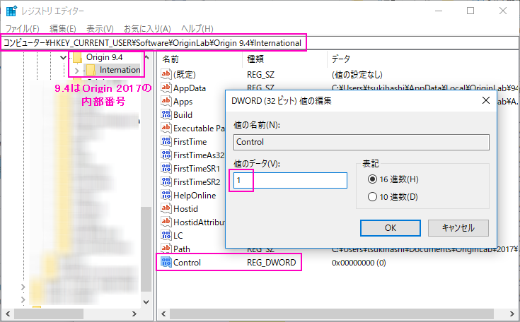

FAQ-752 Originが起動しない場合どのようにしたらいいでしょうか？
troubleshooting-Origin-can-not-be-started
最終更新日：2023/1/27
インストール後にOriginが起動しない場合、次の方法を試してください。提示された順に試し、それがうまくいかない場合、次の方法を試してください。
最新のインストーラを使用してOriginを修正または再インストール
- Originの追加と削除実行して、修正を行います。
または
- 最新のサービスリリースのインストールファイルはテクニカルサポートに連絡して取得してください。最新のインストーラを使用して、Originをアンインストールし、新しいフォルダに再度インストールし、User Filesフォルダも新しいものを設定してください。
ユーザファイルフォルダを新しいパスに変更する
Originが開けない場合は、次のコマンドラインを実行して、Originに新しいUFFを強制的に選択させます。スイッチ"-d"を使ってフルパスでOrigin EXEを呼び出します。
"<Origin.EXE path>\<Origin.EXE name>" -d
例えば、
"C:\Program Files\OriginLab\Origin2023\Origin64.exe" -d
Originコマンドの詳細については、このページを参照してください。
タスクマネージャーにOriginが表示される
タスクマネージャーにOriginが表示されている場合、以下をお試しください。
- プロセスエクスプローラ（Microsoftのテスクマネージャの上位版）をダウンロードします。
- http://technet.microsoft.com/en-us/sysinternals/bb896653.aspx
- Originを起動し、タスクマネージャー内にOriginが表示されていることを確認します。
- ステップ1でダウンロードしたツールを解凍（展開）して、procexp.exeを実行します。
- 開いたダイアログで、Origin EXEファイルを右クリックしてメニューからDumpを作成 > Minidumpを作成を選択します。
- *.dmp ファイルが保存されるので、ZIPファイルにしてテクニカルサポートまでお送りください。
その他
タスクマネージャー内にOriginがなく、Originが起動しない場合、以下の操作でデバッグログファイルOrigin_Log.txt を取得して送ってください。
- Windowsスタートボタンをクリックします。検索テキストボックス に次のように入力します。
regedit
レジストリエディタを開きます。
- レジストリエディタで、HKEY_CURRENT_USER|Software|OriginLab|Origin ***|International| を参照します。
- Origin 2015、2016および2017はレジストリエディタではOrigin 9.2、Origin 9.3およびOrigin 9.4に対応しています。
- レジストリエディタの右パネルで右クリックし、新規：DWORD値または64bitPCでは新規：DWORD(32ビット)値を選択します。Controlと名前をつけます。右クリックして、修正を選択し、Value Data テキストボックスを1に設定します。OKをクリックします。
- 
- Originを起動します。Origin_Log.txt という名前のログファイルがC:\Users\<loginName>\AppData\Local\Tempフォルダに作成されます。新しく生成されたことを確認するために日時を確認してください。
- Origin_Log.txtファイルをお送りください。
Note: デバッグを無効にするには、regeditのControlエントリを削除してください。これを行わない場合、Originを実行できるようになった後、動作が遅くなることがあります。
関連トピック：
キーワード:トラブルシューティング, デバッグ, ログファイル, レジストリ, regedit, 修正, DWord, Process Explorer